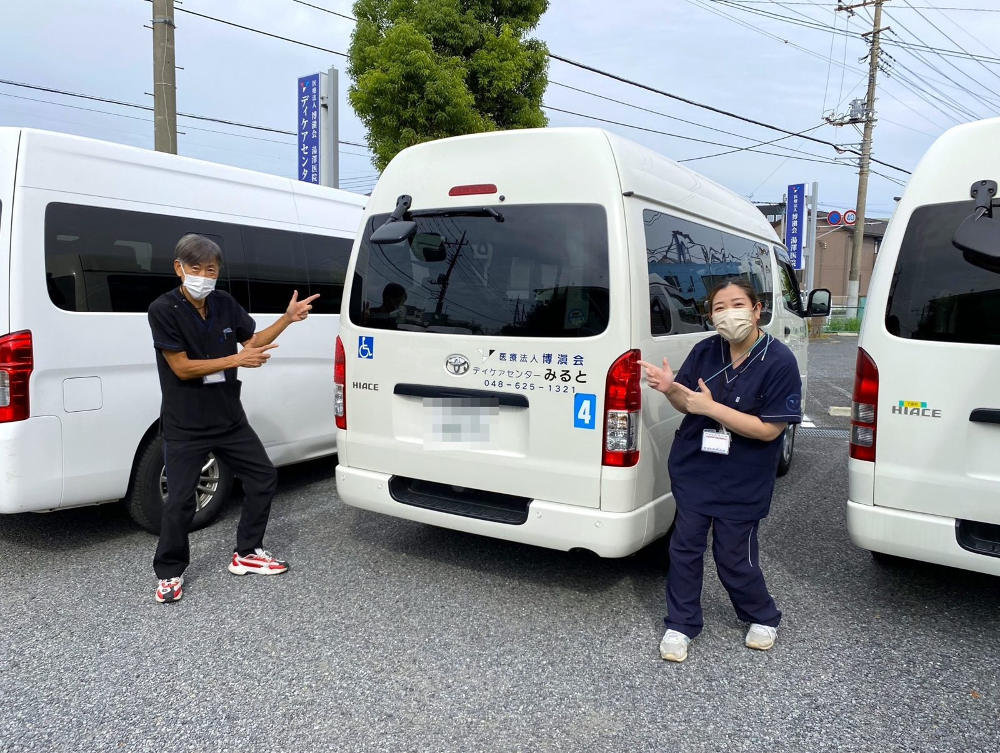

あなたの運転が、誰かの「安心」と「笑顔」につながる。
デイサービスなどをご利用の方を、ご自宅と施設のあいだで送り迎えするお仕事です。朝だけ・夕方だけなど、あいている時間に合わせて働けます。

年齢・性別は問いません。いまの暮らしに合わせた働き方をご相談ください。
子どもが学校や園にいる時間を使って働けます。企業内保育園もあります。
長年の運転経験を、地域の方の送り迎えに生かせます。体力に合わせて無理なく働けます。
朝だけ、夕方だけの短い時間からご相談いただけます。
決まった地域を、決まった時間に走るお仕事です。長距離の運転はありません。要確認
「いってらっしゃい」「また明日ね」。毎日の送り迎えで、ご利用者さまとご家族を支えます。
まずはドライバーとして、介護の現場の雰囲気を知ることができます。
01
乗り降りのお手伝いは介護スタッフが行います。運転に集中できます。
02
特別な資格や経験はいりません。運転が好きな方、地域の役に立ちたい方を歓迎します。
03
朝の送りだけ、夕方の迎えだけなど、ご都合に合わせてご相談ください。
［要確認］朝の送り：00:00〜00:00
［要確認］日中：車両の点検・清掃など
［要確認］夕方の迎え：00:00〜00:00
| 雇用形態 | パート職員 |
|---|---|
| 給与 | 時給 1,196円 |
| 勤務時間 | 要記入：時間帯・1日の時間数 |
| 休日 | 要記入：休みの曜日など |
| 資格 | 普通自動車免許（未経験OK） |
| 待遇 | 企業内保育園あり（お子さまを預けて勤務OK）要確認：ドライバーも対象か |
ご希望の施設があればご相談ください。
さいたま市西区西遊馬1258
さいたま市西区西遊馬771-2
さいたま市西区三橋6丁目567
Q. 介護の経験がなくても大丈夫ですか？
A. 大丈夫です。乗り降りのお手伝いは同乗する介護スタッフが行います。
Q. 年齢の上限はありますか？
A. 年齢・性別は問いません。60代以上の方もご相談ください。要確認：年齢の書き方
Q. ほかの仕事と掛け持ちできますか？
A. 要記入：掛け持ち（副業）の可否
Q. 大きな車を運転しますか？
A. 要記入：車の種類・大きさ
Q. 週に何日から働けますか？
A. 要記入：週の日数の目安